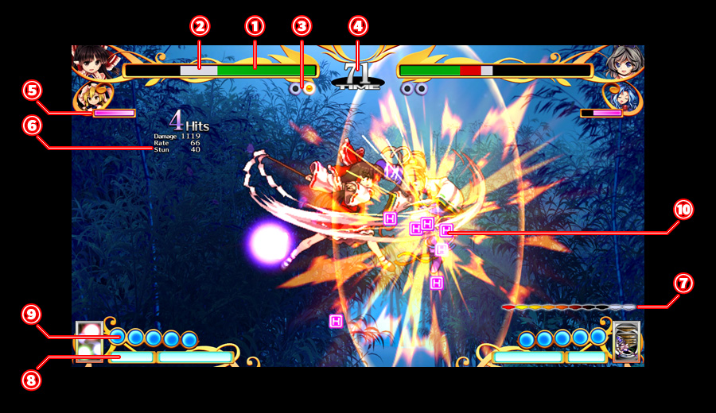

対戦画面説明
- ①ライフゲージ
- プレイヤーの残り体力です。相手からダメージを受けると減少し、全てを失うと一本取られます
- ②回復可能ライフ
- スレイブに交代中、時間で回復可能なライフです
またスレイブがダメージを受けるとここから先に消費します
- ③勝利本数
- 一本取ると一つ点灯。全て点灯すると対戦勝利となります
- ④残り時間
- 戦闘の残り時間です。時間切れになると残りライフが多い方が一本取ります
- ⑤怪奇ゲージ
- 完全憑依の使用に必要なゲージです
- ⑥戦闘情報
- 連続技が成立すると戦闘情報が表示されます
- Ｈｉｔｓ
攻撃のヒット数
- 連続でヒットした攻撃の回数
- Ｄａｍａｇｅ
累計ダメージ
- 連続でヒットした攻撃によって与えている合計ダメージ
- Ｒａｔｅ
ダメージ補正率
- 現在相手に与えるダメージに掛かっている補正の量
- Ｓｔｕｎ
スタン値
- １００を超えるとそれ以上の追撃ができなくなりますが、相手が長時間ダウンします
- ⑦固有ゲージ
- キャラ固有に表示される情報
- ⑧スペルゲージ
- スペルカードの使用に必要なゲージです
攻撃を当てたり受けたりすると増え、溜まるとスペルカード宣言ができるようになります
スペルゲージの長さは選択したスペルカード、スレイブによって異なります
- ⑨霊力
- 射撃、必殺技などの使用で消費します。使った分は時間経過で回復します
- ⑩憑依アイテム
- 相手の攻撃を当てると出現し、怪奇ゲージを増加させます